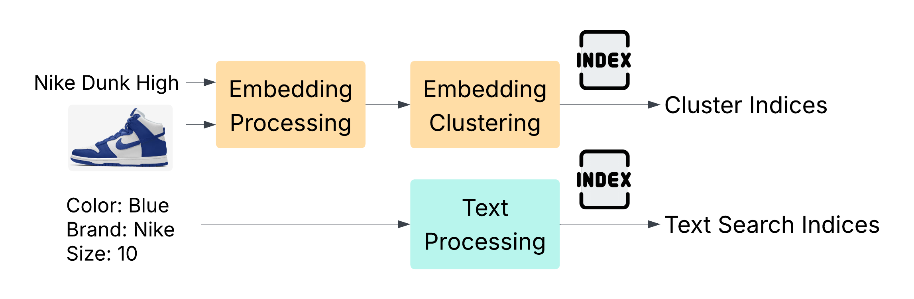
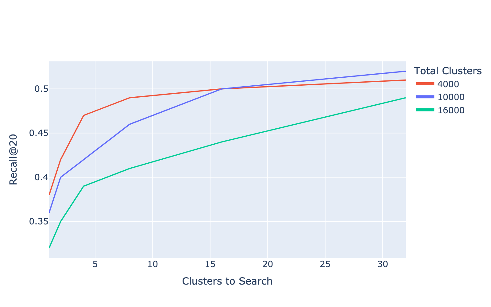
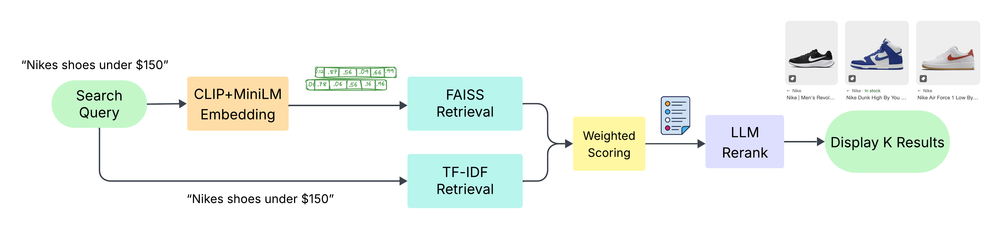
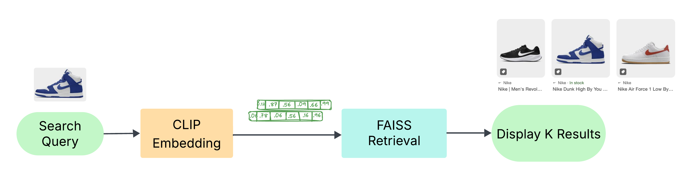
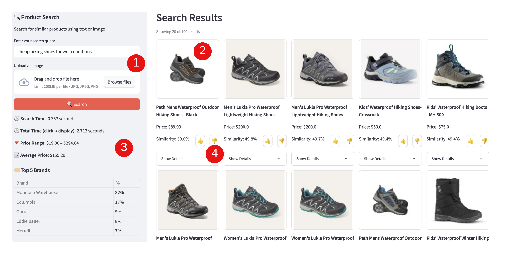
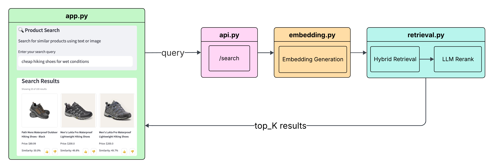

| Method | Query Type | Recall@20 | Precision@20 | Search Time (s) | |
|---|---|---|---|---|---|
| 0 | Text Search | Basic Query | 0.42 | 0.73 | 0.30 |
| 1 | Text + Embeddings | Basic Query | 0.33 | 0.81 | 0.60 |
| 2 | Text + Embeddings + LLM | Basic Query | 0.41 | 0.78 | 4.24 |
| 3 | Text Search | Natural Query | 0.07 | 0.07 | 0.30 |
| 4 | Text + Embeddings | Natural Query | 0.53 | 0.70 | 0.60 |
| 5 | Text + Embeddings + LLM | Natural Query | 0.58 | 0.62 | 4.24 |
Find me a better product!
Executive Summary
FinlyWealth is an affiliate marketing platform that rewards customers for applying for financial products. It is now looking to expand its business by offering e-commerce products through its platform. To support this transition, a team of Master of Data Science students from the University of British Columbia has developed a fast and scalable multimodal search engine that allows users to search using text, images, or both, to find the most relevant products. The final product delivers product discovery by leveraging semantic understanding, enabling more accurate and relevant search results beyond simple keyword matching.
Our retrieval pipeline combines multimodal CLIP (Radford et al. 2021) embeddings with text-only MiniLM (Face 2024) embeddings, indexing them using FAISS (Johnson, Douze, and Jégou 2017) for efficient large-scale similarity search. At query time, the system identifies semantically relevant products by retrieving similar items from the index and then applies an LLM-based (OpenAI 2023) reranking module to refine the ranking. The architecture consists of a Streamlit (Streamlit Inc. 2019) frontend, a Flask-based (Ronacher 2010) API backend, and a vector database(Kane 2021) that supports embedding-based retrieval. The system effectively handles complex natural language and multimodal queries, a common challenge in e-commerce search. Quantitatively, we observed a Recall@20 of 0.56, Precision@20 of 0.64, and an average query time of 4.24 seconds over a dataset of one million products. Our data product provides a reproducible pipeline that allows FinlyWealth to index new items, evaluate system performance, and support semantic search for future e-commerce offerings.
1 Introduction
As FinlyWealth expands its offerings from personal finance into the e-commerce sector, it faces the challenge of delivering a scalable and effective product search experience across a rapidly growing and diverse catalog. To address this, a team of Master of Data Science students at the University of British Columbia is developing a machine learning-powered multimodal search engine that understands the semantic meaning of user queries, handling both text and image inputs to help users find relevant products more intuitively and efficiently.
Search in the e-commerce domain presents unique challenges due to the wide variety of ways users express their search intent. Traditional approaches, such as TF-IDF-based text search, work well for simple queries like “iPhone” or “laptop.” However, most user queries are free-form, complex, and infrequent. The existing system relies on basic keyword matching, lacks semantic understanding, struggles with spelling mistakes, and does not support multimodal inputs or large-scale performance evaluation.
1.1 Objective
To address these gaps, this project designed and implemented a fast, scalable multimodal search system that captures semantic meaning of user queries and returns the most relevant products to the users. Architecture components include:
| Client Requirement | Our Solution |
|---|---|
| Support for natural language and multimodal queries | Combined CLIP (image-text) and MiniLM (text-only) embeddings; LLM-based reranking for semantic relevance |
| Fast response time | Indexed embeddings using FAISS for efficient approximate nearest neighbor search |
| Reusable API endpoints | Developed modular backend with Flask APIs |
| Reproducible data pipeline | Designed modular indexing, query search, and evaluation pipelines, automated via make |
| Web interface for user interaction | Built a user-friendly interface using Streamlit |
| Transparent evaluation and benchmarking | Proposed evaluation plan: Recall@20, Precision@20 (human-judged), and query time |
To support scalable data storage, we use PostgreSQL with the pgvector extension, providing an affordable and efficient solution for storing embeddings and associated metadata.
The final data product is evaluated using the following evaluation metrics:
Recall@K: Measures how often the intended or relevant product appears in the top K retrieved results
Precision@K: Measures how many of the top K retrieved products are actually relevant, based on manual human relevance assessments
Query time: Measures how long each query takes to return results (target <= 5 seconds)
2 Data Science Methods
2.1 Data Source, Description and Cleaning
The dataset consists of multimodal product data, including images (14,684,588 JPEG files, approximately 67 GB), textual information (product names and descriptions), and structured metadata (e.g., Category, Brand, Color). The metadata is stored in a 12 GB CSV file containing 15,384,100 rows and 30 columns.
After conducting exploratory data analysis and consulting with our partner, we selected the 16 most relevant columns that capture the key information users care about. We excluded non-English market entries—retaining approximately 70% of the dataset—in line with our partner’s business focus. Additionally, we merged the Brand and Manufacturer columns into a single MergedBrand field to reduce duplication while preserving distinct brand information. We chose to ignore missing values in the metadata columns, as these fields are likely to provide supplementary information, while the product name already contains the primary details (Table 2).
| Group | Attribute | Description / Examples |
|---|---|---|
| Identifiers | Pid |
Unique product ID; links to image filenames |
| Text Fields | Name |
Product title (0.2% missing) |
Description |
Product description (0.03% missing) | |
Category |
Product category (28% missing; ~15 K unique values) | |
| Pricing & Availability | Price |
Listed price |
"PriceCurrency" |
Currency of the price | |
FinalPrice |
Final price after discounts | |
Discount |
Discount percentage or value | |
isOnSale |
Boolean flag | |
IsInStock |
Boolean flag | |
| Branding | Brand |
Brand name (53% missing; ~21 K unique values) |
Manufacturer |
Manufacturer name (34% missing; ~26 K unique values) | |
| Product Features | Color |
Product color (49% missing; ~170 K unique values) |
Gender |
Target gender (54% missing; 3 values: e.g., male/female) | |
Size |
Product size (46% missing; ~55 K unique values) | |
Condition |
Product condition (e.g., new, used; 5 values) |
Given the timeline for this project, we’ve selected 1M dataset out of the 15M to build the final data product.
2.2 Indexing Pipeline
Our goal was to develop a multimodal search engine capable of delivering relevant product results for a wide range of customer queries. To support this, we designed a system that encodes product data with both text and image understanding and enables scalable retrieval of similar items. The system incorporates TF-IDF for keyword-based matching, CLIP for aligning visual and textual information, MiniLM for efficient semantic text encoding, and FAISS for scalable vector similarity search. This pipeline (Figure 1) is then used to convert the 1M product data into indices that can be searched.

2.2.1 Cleanind Data
The dataset was filtered to include only products priced in USD, CAD, or GBP, ensuring that associated metadata—such as product descriptions—is predominantly in English. Additionally, the Brand and Manufacturer fields, which contained largely redundant information, were consolidated into a single column to reduce duplication and improve consistency.
2.2.2 Generating Embeddings
Our embedding strategy was inspired by Liu and Lopez Ramos (Liu and Lopez Ramos 2025), who combined CLIP and a BERT model fine-tuned on e-commerce data to enhance product search relevance. Since we lacked access to labeled, domain-specific data for fine-tuning, we opted for MiniLM (Face 2024)—a smaller, faster transformer model that performs well out-of-the-box and provides solid semantic understanding. We generate embeddings using both CLIP (for image-text alignment) and MiniLM (for textual metadata), then concatenate them into a single unified embedding, which is stored in a vector database for retrieval.
2.2.3 Clustering Generated Embeddings
To support scalable and efficient retrieval, we leveraged FAISS, a library optimized for fast similarity search and clustering of dense vectors. We tuned key hyperparameters to determine the optimal number of clusters (nlist) and the number of clusters to probe during search (nprobe). We selected 10,000 clusters, as it provided similar best performance as shown in Figure 2. During retrieval, we search across the top 32 clusters, striking a balance between speed and recall. Using an Inverted File Index (IVF), we clustered 1 million products into 10,000 groups, with each product assigned to its nearest centroid. At query time, FAISS limits the search to the most relevant clusters, significantly improving search efficiency over exhaustive approaches.

2.2.4 Processing Metadata Text
In addition to vector-based methods, we implemented a traditional keyword-based search using TF-IDF, which ranks products based on the relevance to the query. Product descriptions and attributes are processed into tsvector format and stored in a PostgreSQL database. A tsvector is a specialized data type for full-text search in Postgres that tokenizes text into lexemes (root word forms) and removes stopwords, enabling fast and accurate query matching through the tsquery syntax (PostgreSQL Global Development Group, n.d.).
2.3 Search Pipeline
2.3.1 Generating Query Embeddings
When a search query is submitted, we process it in two forms: the raw text and its corresponding embedding. The raw text is used for traditional full-text search, while the embedding is used for vector-based retrieval. Each method returns a ranked list of results, which are then combined using a weighted scoring system. To further enhance relevance, we apply a Large Language Model (LLM) to rerank the top results based on deeper semantic understanding (Figure 3).

For image-only queries, the full text search and LLM reranking step is skipped since there are no text inputs to use (Figure 4).

2.3.2 Reranking with a Large Language Model (LLM)
The LLM plays a key role in improving result relevance by reranking the initial set of retrieved products. It helps interpret the user’s intent and refines the rankings based on multiple criteria, including:
- Semantic similarity to the query intent
- Direct keyword matches
- Mentions of specific brand names
- Price relevance compared to similar items
Reranking is particularly important because embedding retrieval could return items that are broadly relevant but lack fine-grained alignment with the user’s actual intent. LLMs offer a more nuanced understanding of both the query and the retrieved content, enabling more accurate prioritization of results. This is particularly useful for natural language queries, where the user’s intent may be complex or not explicitly stated.
For example, if a user searches for “a cheap office chair for home use,” the user has not explicitly specified a price point and the initial results may include a mix of premium and budget options. An LLM can interpret “cheap” as a key signal and evaluate product prices within the context of similar items. It can lower the ranking of high-end chairs and highlight budget-friendly options that better reflect the user’s intent, which embedding retrieval might not account for.
2.4 Evaluation
This project focused on improving search performance for natural language queries, where traditional keyword-based methods often fail. We compared three configurations: Text Search (baseline), Text + Embeddings, and Text + Embeddings + LLM. The three configurations were evaluated on Recall@20, Precision@20, and Search Time. A summary of evaluation results is provided in Table 3.
2.4.1 Recall
Recall@20 is calculated based on whether the specific target product being searched for appears within the top 20 retrieved results. This evaluation reflects whether the system is able to surface the exact intended product, which is particularly important for e-commerce use cases where users often look for a specific item.
Recall saw the most improvement for natural queries, the primary focus of this project. The baseline Text Search method retrieved only 7% of relevant results, underscoring its limitations for conversational input. By adding semantic embeddings and LLM reranking, recall was increased to 58%. This highlights the LLM’s ability to recover more relevant items beyond those matched by keywords or nearest-neighbor search.
2.4.2 Precision
Precision@20 measures the proportion of the top 20 results that are relevant to the query, based on human judgment. It reflects the ranking quality—how many of the returned products are actually useful to the user.
Precision also improved substantially for natural queries, rising from 7% with baseline Text Search to 70% with Text + Embeddings, and 62% with the LLM-enhanced pipeline. The slight drop in precision with the LLM is likely due to the subjective nature of our evaluation process. In the absence of labeled ground truth, relevance was manually assessed by team members using their own judgment. Without standardized annotation guidelines, this introduces variability in what is considered “relevant”.
2.4.3 Search Time
Search time captures the total time taken to process a query and return results. It helps evaluate the responsiveness of the system under different configurations.
Search time increased as more complex processing was introduced. The LLM-based reranking step added significant overhead, bringing total query time to 4.24 seconds. This additional time is due entirely to the reranking process, where the LLM semantically evaluates and reorders the top results. Overall, we are still under the target time of 5 seconds.
3 Data Product and Results
The data product is comprised of preprocessing scripts, a frontend interface and a backend API.
3.1 Indexing Pipeline
The indexing pipeline involves data cleaning, followed by embedding generation, database loading, and finally, FAISS index generation. This process is initiated via the make index command, which executes the aforementioned steps to prepare the products for contextual querying. The pipeline executes its steps in the following sequential order:
clean_data.py: Cleans the raw CSV data by removing null values, filtering for English products etc.generate_embed.py: Generates embeddings from product names using MiniLM (Wang et al. 2020) and from images using CLIP (Radford et al. 2021), respectively.load_db.py: Loads these generated embeddings and associated product metadata into the PGVector database.compute_faiss_index.py: Compute the FAISS indices for faster search.
3.2 Frontend Interface
The Streamlit-based frontend serves as an internal tool for evaluating the quality of search results and testing the underlying API. It supports a range of query types—including text-only, image-only, and multimodal inputs. The interface also provide summary statistics on the retrieved results.

Key Features:
Multimodal Input: Supports both text queries and image uploads as seen in as [1] in Figure 5
Rich Results Display: Product cards with images, prices, and detailed metadata
Analytics Dashboard: Live statistics on search results including price ranges, brand distribution, category breakdowns and LLM reasoning as seen as [2] in Figure 5
User Experience Design:
- Progressive result loading (20 results initially, expandable)
- Visual feedback for user interactions (Precision). This is the thumbs up and thumbs down button labelled as [4] as seen in Figure 5. These results are collected and are used in calculating precision metrics.
3.3 Backend API
The Flask-based (Ronacher 2010) REST API serves as the core processing engine:
Endpoints:
POST /api/search: Main search functionality supporting text, image, and multimodal queriesGET /api/ready: Health check and initialization statusPOST /api/feedback: User feedback collection for continuous improvement
Query Workflow:

Our query workflow starts with passing the search query to the API. This is followed by Embedding Generation, which creates appropriate vector representations. Next, a Hybrid Retrieval step combines both vector similarity and full-text search for comprehensive results. Subsequently, LLM Reranking, utilizing models like OpenAI GPT, optimizes the relevance of the retrieved information. Finally, the top retrieval results are sent back to the frontend.
3.4 Database and Storage
The system’s data infrastructure is built on Google Cloud. Product metadata and embeddings are stored in a PostgreSQL database with the pgvector extension on Cloud SQL, primarily for retrieval and indexing purposes. Similarity search is performed using FAISS indices, which are stored on Google Cloud Storage alongside product images. This storage setup is highly scalable, making it easy to accommodate growing volumes of product images and embedding indices as the catalog expands.
3.5 Strengths and Limitations
This section outlines the core strengths and current technical constraints of the search system. While the architecture is designed for flexibility, speed, and multimodal support, certain trade-offs exist due to reliance on pre-trained models and resource requirements.
3.5.1 Key Advantages
- Multimodal Capability: Unique ability to process both text and image queries simultaneously
- Hybrid Search Architecture: Combines vector similarity with traditional full-text search for improved recall
- Scalable Design: FAISS indices enable sub-second search across millions of products
- Flexible Model Integration: Supports multiple embedding models and LLM providers
3.5.2 Technical Constraints
- Model Dependencies: Relies on pre-trained models that may not be domain-specific. No training done
- Memory Requirements: Large embedding matrices require significant RAM and storage for optimal performance
- Single-Language Support: Currently optimized only for English queries
- Update Propagation: Adding new products requires recomputing embeddings and rebuilding indices
3.6 Potential Improvements and Implementation Challenges
As the system evolves, several enhancements can be explored to boost retrieval accuracy, scalability, and user relevance. This section highlights key opportunities identified through initial experimentation and outlines the potential benefits of each, along with the practical challenges they present.
3.6.1 Advanced Keyword Extraction with KeyBERT
- Improvement: Implement KeyBERT for automatic keyword extraction to enrich text embeddings. This was explored and improved the recall score
- Benefits: Better understanding of product attributes and user intent
- Implementation Challenge: Requires additional compute resources for keyword processing
3.6.3 LLM Prompt Engineering with Real Customer Data
- Improvement: Develop sophisticated prompts using actual user search patterns and feedback
- Benefits: More contextually aware result reranking
- Implementation Challenge: Privacy concerns and data collection complexity
3.6.4 Managed Vector Database Migration
- Improvement: Transition to Pinecone or similar managed vector database services
- Benefits: Reduced operational overhead, better scalability, advanced features
- Implementation Challenge: Migration complexity and ongoing costs
- Cost-Benefit Analysis: Higher operational costs but reduced engineering overhead
4 Conclusion and Recommendations
We have developed a fast and scalable multimodal search engine that allows users to retrieve relevant products using text, image, or hybrid queries. In contrast to Finly’s original platform, which relies on direct keyword matching, our system is built to understand the semantic meaning of natural language and handle complex queries effectively. Even with the most computationally intensive model, the system maintains a response time under 5 seconds, meeting the usability standards for customer-facing applications.
To achieve this, we integrated multiple models and tools. For multimodal capability, we leveraged CLIP (Radford et al. 2021) to extract features from both text and images. To capture semantic information, we incorporated MiniLM (Face 2024) along with an LLM-based reranking module (OpenAI 2023). To ensure low latency, we implemented FAISS indexing (Johnson, Douze, and Jégou 2017) for efficient similarity search. Additionally, we adopted Google Cloud for data storage to meet the scalability requirements.
In our performance evaluation on a dataset of one million products, the system achieved a Recall@20 of 0.56, Precision@20 of 0.64, and an average search time of 4.24 seconds. These results demonstrate that our search engine is both accurate and responsive.
4.1 Recommendations
Our product successfully met all of Finly’s requirements. We also developed a web interface that presents a statistical summary of the retrieved results and integrated a modular evaluation framework for our partner. However, several limitations of the current system should be noted.
Evaluation limitations: The precision evaluation was based on the manual annotation of the top 20 retrieved products by our team. Given our limited domain expertise in e-commerce and the subjective interpretation of what constitutes a “relevant” product, the labeling may suffer from inconsistency and potential bias. To improve reliability, we recommend involving an e-commerce expert to standardize annotation guidelines and ensure a more professional and consistent evaluation process.
Scalability and infrastructure: Currently, our reranking module is applied only to the top 30 retrieved products due to its relatively long execution time. We did not conduct experiments to determine the optimal cutoff threshold that balances performance and latency, primarily due to time and resource constraints. However, we believe that implementing an adaptive cutoff strategy could be a valuable direction for future enhancement.
Additionally, due to limited computing resources, we generated embeddings for only one million products, rather than the entire product catalog. This limitation can be easily addressed by rerunning our reproducible indexing pipeline once Finly gains access to sufficient computational infrastructure.
Data constraints: Due to the absence of labeled customer interaction data, our current similarity search relies solely on fusion embeddings of text and image inputs, without any model fine-tuning. Prior academic research (Liu and Lopez Ramos 2025) suggests that adding a projection layer on top of the fusion embedding can improve performance. Once Finly acquires sufficient labeled data, the pipeline can be adapted to include such a layer along with an appropriately designed loss function.
Despite the limitations discussed above, our solution offers FinlyWealth a robust, scalable architecture and a reproducible development pipeline. This positions the company well to scale the system further and adapt it to the growing and evolving needs of its e-commerce platform.
Appendix
Tools and Libraries
| Library | Purpose in Project |
|---|---|
| NumPy | Efficient numerical operations, especially for vector manipulation and math ops. |
| Flask | Lightweight web framework used for rapid prototyping of API endpoints. |
| FAISS | Approximate nearest neighbor search for CLIP embeddings; enables fast vector search. |
| Hugging Face | Access to pretrained models like CLIP; used for text and image embedding. |
| Pillow | Image processing library used for resizing, normalization, and format conversion. |
| spaCy | Natural language processing toolkit for tokenization, NER, and text normalization. |
| Pinecone | Scalable, cloud-based vector database for fast and persistent similarity search. |
| PostgreSQL | Relational database to store Embeddings. Allows for multiple columns to have ebeddings |
Definitions
CLIP: Generates embeddings for both text and images, mapping them into a shared embedding space. We are not training any embedding model, instead we use off-the-shelf CLIP models to generate embeddings.
Embedding Generation: The preprocessed query is then transformed into a numerical representation (an embedding) that captures its semantic meaning.
FAISS (Facebook AI Similarity Search) is a library that allows developers to quickly search for embeddings of multimedia documents.Enables efficient approximate nearest neighbor search over embeddings.
TF-IDF: A numerical statistic used to evaluate the importance of a word in a document within a collection of documents
References
Face, Hugging. 2024. “MiniLM on Hugging Face.” https://huggingface.co/models.
Johnson, Jeff, Matthijs Douze, and Hervé Jégou. 2017. “FAISS: A Library for Efficient Similarity Search and Clustering of Dense Vectors.” https://github.com/facebookresearch/faiss.
Kane, Andrew. 2021. “Pgvector: Open-Source Vector Similarity Search for Postgres.” https://github.com/pgvector/pgvector.
Liu, Dong, and Esther Lopez Ramos. 2025. “Multimodal Semantic Retrieval for Product Search.” arXiv Preprint arXiv:2501.07365, January. https://doi.org/10.48550/arXiv.2501.07365.
OpenAI. 2023. “GPT-3.5-Turbo Model.” https://platform.openai.com/docs/models/gpt-3-5.
PostgreSQL Global Development Group. n.d. “Text Search Types.” https://www.postgresql.org/docs/current/datatype-textsearch.html.
Radford, Alec, Jong Wook Kim, Luke Hallacy, Aditya Ramesh, Gabriel Goh, Sandhini Agarwal, Girish Sastry, et al. 2021. “Learning Transferable Visual Models from Natural Language Supervision.” Proceedings of the International Conference on Machine Learning (ICML). https://github.com/openai/CLIP.
Ronacher, Armin. 2010. “Flask: Web Development, One Drop at a Time.” https://flask.palletsprojects.com/.
Streamlit Inc. 2019. “Streamlit.” https://streamlit.io.
Wang, Wenhui, Furu Wei, Li Dong, Hangbo Bao, Nan Yang, and Ming Zhou. 2020. “MiniLM: Deep Self-Attention Distillation for Task-Agnostic Compression of Pre-Trained Transformers.” arXiv Preprint arXiv:2002.10957. https://arxiv.org/abs/2002.10957.